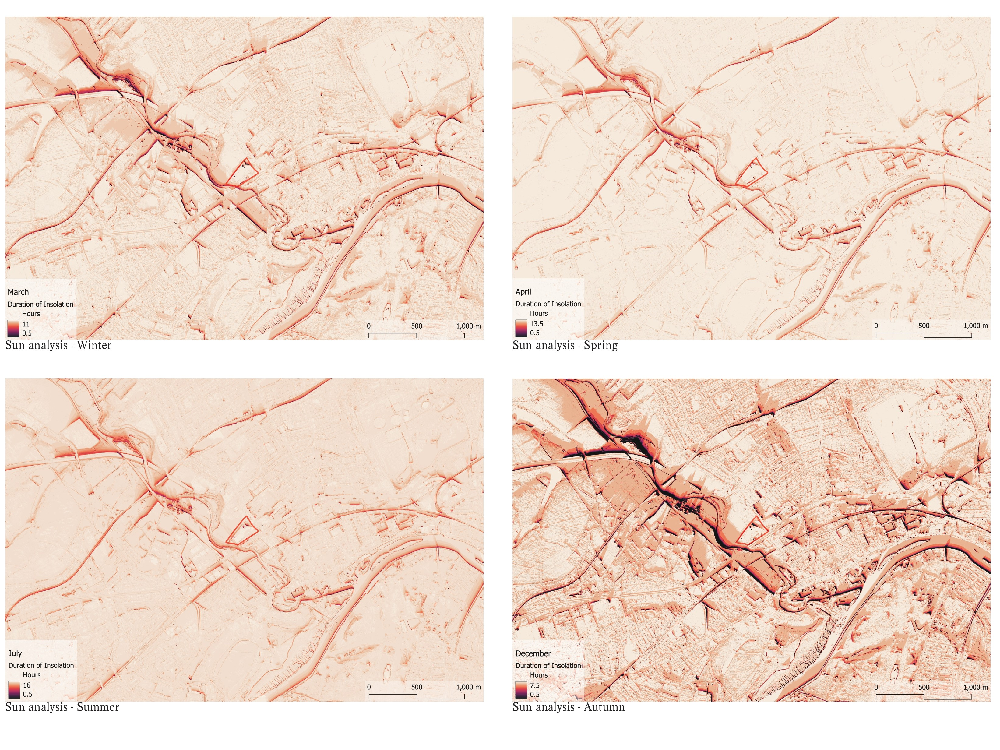
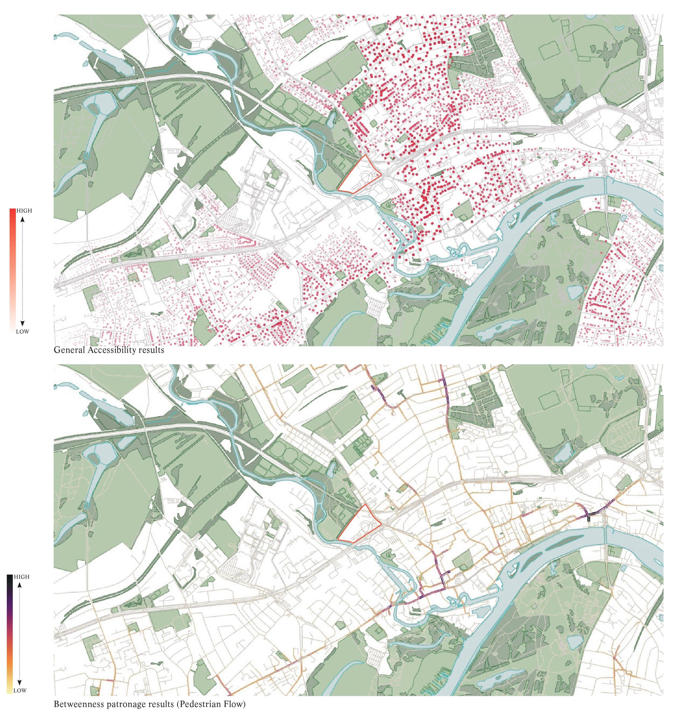
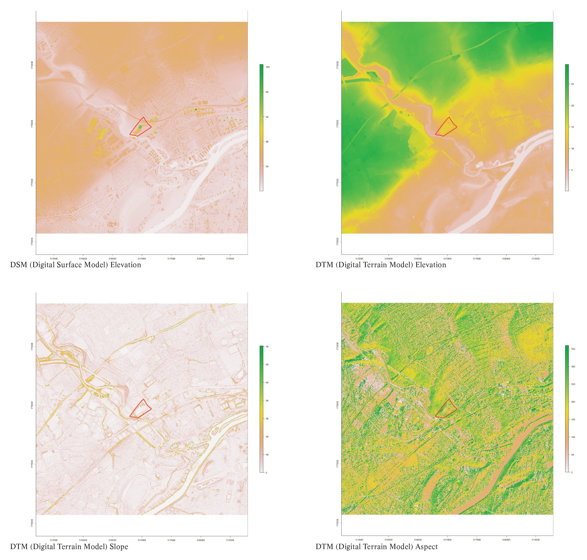

LARGE-SCALE REDEVELOPMENT
This project focused on the redevelopment of a multinational company's headquarters into a mixed use residential and office complex. A more traditional urban design/architecture project, this demanded several advanced analysis techniques to guide recommendations on massing and use of the available space.
PROJECT DETAILS
This development located in London required a huge contextual analysis to ensure that the needs of the local community and prospective residents were met. The bid phase and first stage of this project required a several maps, highlighting everything from local typologies, viewshed analysis, insolation analysis and many more. Similar to other projects, population was estimated for all residences in the area, allowing me to run more detailed anprocesses such as betweenness (pedestrian flow) and accessibility analysis, the former of which was repeatedly required in several iterations throughout the different stages of the project, to visualise how visitors of the site would interact with its features.
IMAGE GALLERY

This sunlight analysis uses the digital surface model (DSM) from the UK government LIDAR point cloud dataset to evaluate the duration of daily insolation for the area. Key timeframes for this analysis are chosen as representative weeks within the respective times of year: Winter (05.03 - 11.03), Spring (15.04 - 21.04), Summer (22.07 - 28.07), and Autumn (24.12 - 30.12).

Accessibility analysis returns a 'gravity' index which assesses the accessibility of a certain feature from a point of origin. Pedestrian flow analysis helps to identify busy areas and spots where better pavements or crossings may be needed to improve safety and convenience. This analysis can optimise pathways by identifying the best routes to connect key places, ensuring that important locations, like parks or transit hubs, are easily accessbile to residents and visitors. Both of these analyses utilise data on the household level and incorporate a detailed street network analysis utilising several variables.

Analysis of digital elevation models (DTM and DSM). Slope analysis is a crucial tool for assessing the viability of terrain for development for construction, erosion risk and land stability. Aspect analysis is crucial for understanding micro climates, solar radiation exposure, and vegetation growth patterns.